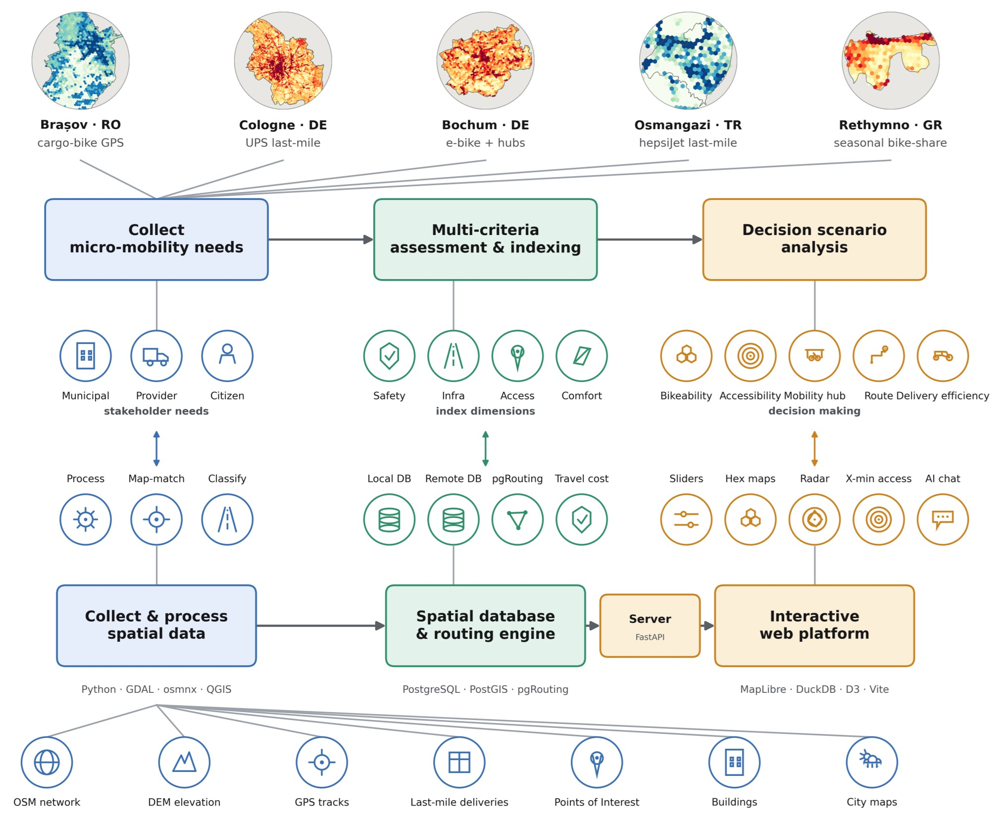
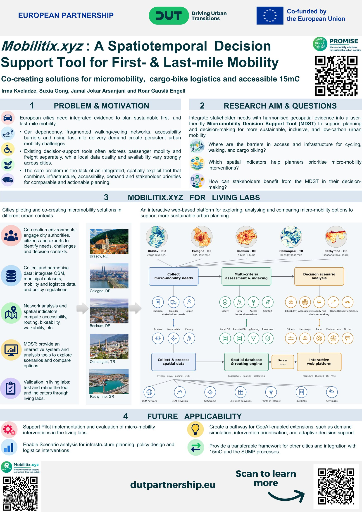
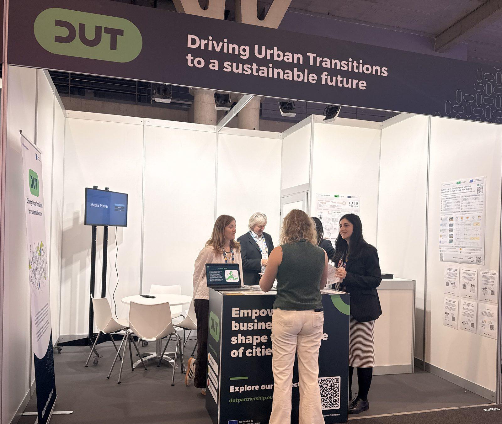
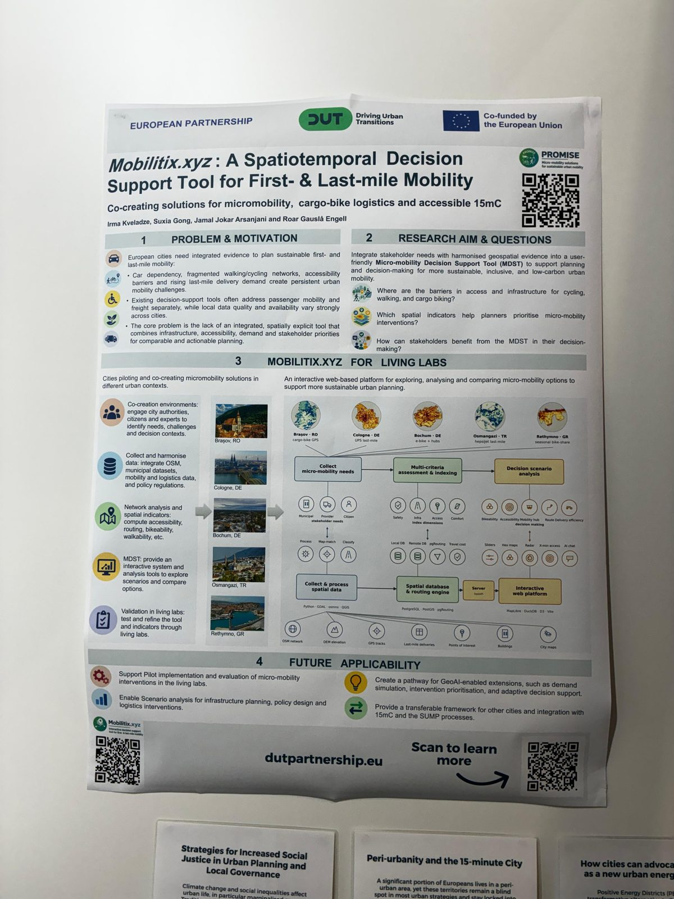
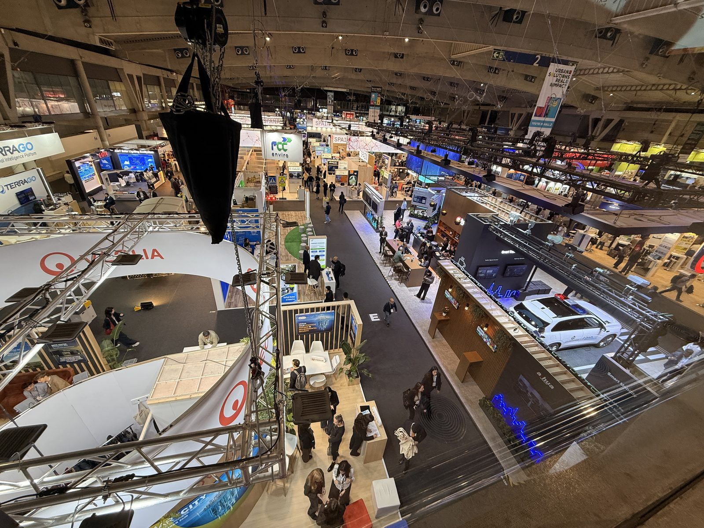

News · 3 – 5 November 2026 · Barcelona
PROMISE presents Mobilitix at Smart City Expo World Congress 2026

The PROMISE team presented Mobilitix, the project's Micro-mobility Decision Support Tool (MDST), at Smart City Expo World Congress 2026 in Barcelona as part of the Driving Urban Transitions (DUT) Partnership.
The poster, authored by Irma Kveladze, Suxia Gong, Jamal Jokar Arsanjani and Roar Gauslå Engell of Aalborg University, introduced Mobilitix as a spatiotemporal decision support tool for first and last mile mobility: co-creating solutions for micromobility, cargo-bike logistics and the accessible 15-minute city, with data collection, network analysis and scenario exploration piloted across the project's five living labs in Brașov, Cologne, Bochum, Osmangazi and Rethymno.
Mobilitix.xyz: A Spatiotemporal Decision Support Tool for First- & Last-mile Mobility
Co-creating solutions for micromobility, cargo-bike logistics and accessible 15mC
1Problem & Motivation
European cities need integrated evidence to plan sustainable first- and last-mile mobility:
- Car dependency, fragmented walking/cycling networks, accessibility barriers and rising last-mile delivery demand create persistent urban mobility challenges.
- Existing decision-support tools often address passenger mobility and freight separately, while local data quality and availability vary strongly across cities.
- The core problem is the lack of an integrated, spatially explicit tool that combines infrastructure, accessibility, demand and stakeholder priorities for comparable and actionable planning.
2Research Aim & Questions
Integrate stakeholder needs with harmonised geospatial evidence into a user-friendly Micro-mobility Decision Support Tool (MDST) to support planning and decision-making for more sustainable, inclusive, and low-carbon urban mobility.
- Where are the barriers in access and infrastructure for cycling, walking, and cargo biking?
- Which spatial indicators help planners prioritise micro-mobility interventions?
- How can stakeholders benefit from the MDST in their decision-making?
3Mobilitix.xyz for Living Labs
Cities piloting and co-creating micromobility solutions in different urban contexts.
- Co-creation environmentsengage city authorities, citizens and experts to identify needs, challenges and decision contexts.
- Collect and harmonise dataintegrate OSM, municipal datasets, mobility and logistics data, and policy regulations.
- Network analysis and spatial indicatorscompute accessibility, routing, bikeability, walkability, etc.
- MDSTprovide an interactive system and analysis tools to explore scenarios and compare options.
- Validation in living labstest and refine the tool and indicators through living labs.
An interactive web-based platform for exploring, analysing and comparing micro-mobility options to support more sustainable urban planning.

4Future Applicability
- Support pilot implementation and evaluation of micro-mobility interventions in the living labs.
- Create a pathway for GeoAI-enabled extensions, such as demand simulation, intervention prioritisation, and adaptive decision support.
- Enable scenario analysis for infrastructure planning, policy design and logistics interventions.
- Provide a transferable framework for other cities and integration with 15mC and the SUMP processes.



